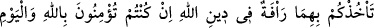

âleminden Cebrâil (a.s.) vâsıtasıyla indirdik.
“Farz kıldığımız” o sûrede bulunan hükümleri kesin olarak vâcib kıldığımız,
demektir. Çünkü farzın aslı demir gibi sert bir şeyi kesmek ve ona tesir etmektir.
‘__WORD__ (farz kılmak)’ da ‘__WORD__ (vâcib kılmak)’ gibidir. Fakat vâki ve sâbit olması
bakımından icâb kelimesi kullanılır. Farz ise o konuda hükmün kesin olması itibariyle
kullanılır. Nitekim el-Müfredât’ta böyle geçmektedir.
“Belki düşünüp öğüt alırsınız” ve haram kılınan şeylerden geri durursunuz,
hükümlerin icrâsına sebep olan hâdiseler vukû bulunca gerekleriyle amel edersiniz
“diye onda” bu sûrenin katmanları arasında hükümlerine delâletleri “açık seçik âyetler
indirdik.” Bu âyetler -âşikâr olduğu üzere- farz kılınan hükümleri açık şekilde ifâde
eden âyetlerdir.
Sûrenin indirilmesi, içindeki âyetlerin de indirilmiş olmasını gerekli kıldığı halde
“indirdik” ifâdesinin tekrarlanması, bu âyetlere verilen önemin kemâlini göstermek
içindir.
Burada bildirilmektedir ki bu âyetlerin hakkı devamlı müslümanlar tarafından
hatırlanır olmak ve ihtiyaç oldukça gözünde canlandırmaktır.
Bu sûredeki âyetlerden hiçbiri bulunmayıp sadece Sıddîk’ın kızı Sıddîka’nın ve
Habîbullah’ın habîbesini temize çıkaran âyet bulunsaydı yine de çok olurdu. Halbuki bu
sûre bu berâet âyetinden başka diğer sûrelerde bulunmayan pek çok delil ve ahkâmı
içinde toplamıştır. Nasıl böyle olmasın ki başka sûrelerin kendisinde toplamadığı
hükümleri ve delilleri bir araya getirmiştir.
2. Zinâ eden kadın ve zinâ eden erkekten her birine yüz sopa vurun; Allah’a ve
âhiret gününe inanıyorsanız, Allah’ın dîninde (hükümlerini uygularken) onlara
acıyacağınız tutmasın. Mü’minlerden bir grup da onara uygulanan cezâya şâhid
olsun.
“Zinâ eden kadın ve zinâ eden erkekten her birine yüz sopa vurun.”
Şimdi önceki âyette bahsi geçen “açık seçik âyetler”in îzâhına ve hükümlerinin
beyanına başlanmaktadır. el-Müfredât’ta geçtiği üzere zinâ, şer’i bir akid olmadan bir
kadınla cinsî münâsebette bulunmaktır. Zâniye, zinâya imkân veren ve rızâ gösteren
kadın demektir. Nitekim “zâniye” siygası, zoraki tecavüz edilen bir kadını değil;
bahsedilen mânâda bir kadını ifâde eder. Zinâ eden kadının zinâ eden erkekten önce
zikredilmesi, o zaman Arap câriyelerin zinâ etmelerinin yaygın olması, kadında arzu
daha bol ve şehvet daha çok olduğu için zinâ fiilinde asıl olması sebebiyledir. Eğer